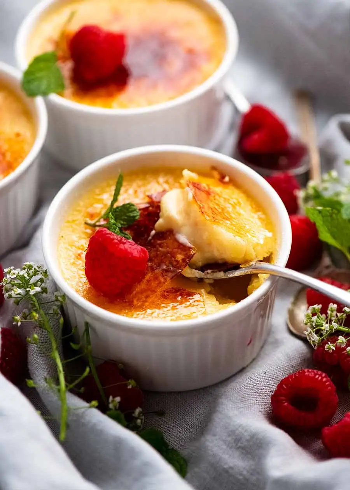

Vanilla Crème Brûlée

This tasty treat is both light and rich, making it the perfect choice when saying: "There's always room for dessert!".
In all honesty, crème brûlée is unbeatable: sweet, light, and small-sized. A truly fun-to-eat dessert!
Ingredients
- 1/2 cup sugar, more for topping
- 1 vanilla bean or 1 teaspoon vanilla extract
- 2 cups heavy or light cream, or half-and-half
- 5 egg yolks
- 1/8 teaspoon salt
Steps
- Heat your oven to 325 degrees Fahrenheit (or 163 degrees Celsius).
- Add the cream, vanilla bean, and salt into a saucepan and cook over low heat, just until hot.
- Let the mixture sit for a few minutes, then discard the vanilla bean (if you are using vanilla extract, you should add it at this step).
- In a separate bowl, beat the 5 egg yolks and sugar together until light, and stir about 1/4 of the cream into the mixture.
- Pour the sugar-egg mixture into cream and stir.
- Pour the mixture into 4 six-ounce ramekins and place them in a baking dish (fill the baking dish with boiling water halfway up the sides of the dish.
- Bake for 30-40 minutes, or until centers are barely set.
- Cool completely, then refrigerate for several hours and up to a couple of days.
- When the dish is ready to serve, top each custard with about a teaspoon of sugar in a thin layer, place the ramekins in a boiler 2-3 inches from heat source and turn on the broiler. Cook until sugar melts and browns or even blackens a bit (about 5 minutes). Serve within 2 hours.